Regular Tours
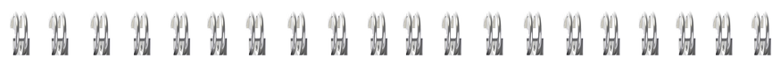
Inti-huasi (Home of the Sun)
Quito, the Equatorial line, Otavalo gourmet or the Cotopaxi National Park. A taste of Ecuador in just 3 nights from USD 267
Day 1 (Any time) QUITO TRANSFER IN
Airport Assistance and transfer to the hotel
Accommodations with breakfast
Day 2 QUITO CITY TOUR + EQUATORIAL LINE MONUMENT w/Snack (7 hours)
Monumental city tour of this main UNESCO cultural heritage site including the Presidential palace, Independence Square, the Metropolitan Cathedral (1550), the masterpiece of the baroque La Compañía (1605) and San Francisco (1535) church and cloister museum.
Guided visit of the –ethno graphic museum at the equator and some free time to enjoy the landmark.
Accommodations with breakfast
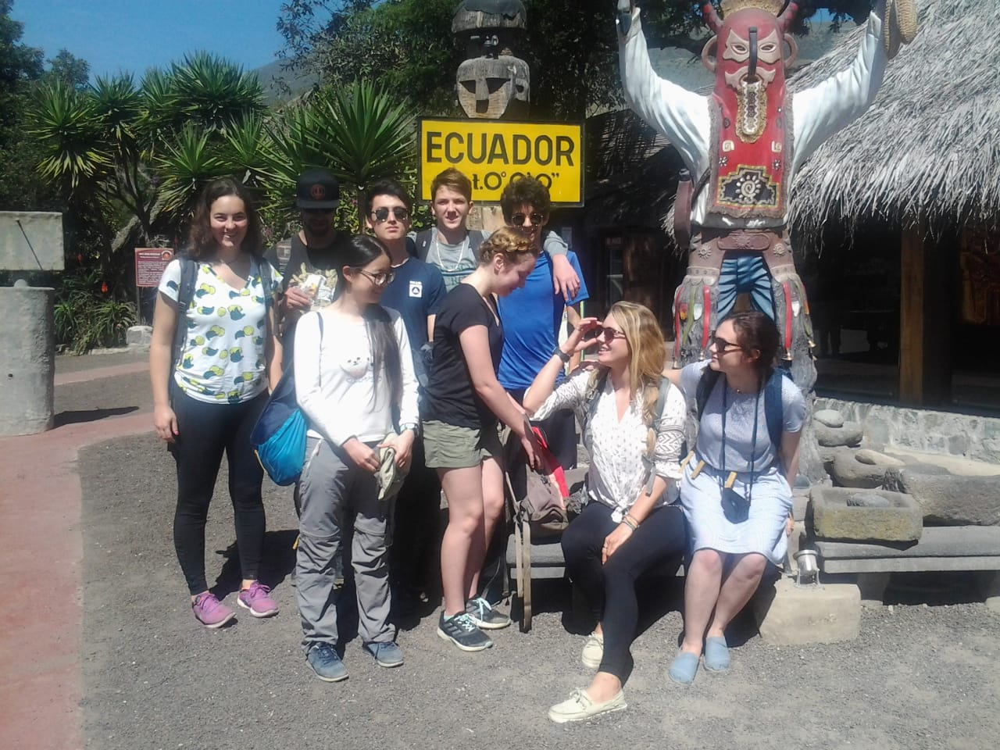
Day 3 FULL DAY OTAVALO INDIAN MARKET & handcraft villages OR COTOPAXI NATIONAL PARK special led by Naturalist guide.
The Otavalo tour includes visits to the traditional handcraft centers of Calderon, Cayambe, San Antonio de Ibarra and Cotacachi as well as to the famous Indian Market. Gourmet lunch will be served at a Relais & Chateaux property.
After an early departure we get into the Cotopaxi National Park, This is the habitat of the Andean Condor and the Ecuadorian Hillstar hummingbirds. Various treks at different altitudes will give the opportunity to see unusual flora and fauna of the upper Andes and a final effort will take you up to the Snowline and Glacial at 4800 m.
Accommodations with breakfast.
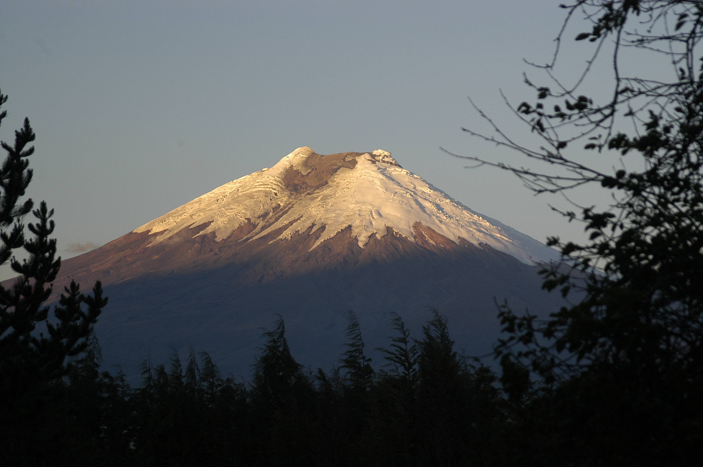
Day 4 TRANSFER OUT
Hotel : Mercure / Accor - 4 star
Gross rates per person
| 11 Pax | 5-10 Pax | 3-4 Pax | 2 Pax | |
|---|---|---|---|---|
| USD | 267 | 308 | 355 | 399 |
| Single Supp. | 135 | |||
Hotel : Hilton / Sheraton - 5 star
Gross rates per person
| 11 Pax | 5-10 Pax | 3-4 Pax | 2 Pax | |
|---|---|---|---|---|
| USD | on request | on request | on request | on request |
| Single Supp. | on request | |||
Hotel : Swissôtel / Raffles international - Deluxe
Gross rates per person
| 11 Pax | 5-10 Pax | 3-4 Pax | 2 Pax | |
|---|---|---|---|---|
| USD | 429 | 469 | 4515 | 559 |
| Single Supp. | 297 | |||
Book Now!
Ecuador Explorer
The Avenue of the Volcanoes Humboldt Steps, Quito, Riobamba & Cuenca, Colonial Cities and Guayaquil pearl of the Ocean Pacific. The small Train of the Andes. From USD 671
Day 1 (Sunday – Tuesday - Thursday) QUITO TRANSFER IN
Airport Assistance and transfer to the hotel
Accommodations with breakfast
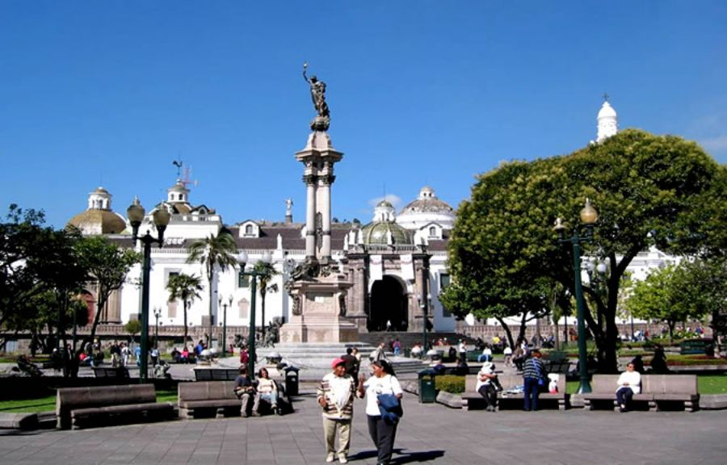
Day 2 QUITO CITY TOUR + EQUATORIAL LINE MONUMENT w/Snack (7 hours)
Monumental city tour of this main UNESCO cultural heritage site including the Presidential palace, Independence Square, the Metropolitan Cathedral (1550), the masterpiece of the baroque La Compañía (1605) and San Francisco (1535) church and cloister museum.
We offer a guided visit of the ethno graphic museum at the equator and some free time to enjoy the landmark.
Accommodations with breakfast
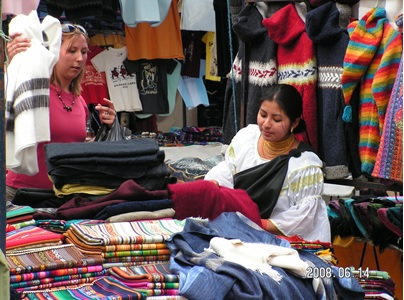
Day 3 QUITO / INDIAN MARKET OR COTOPAXI NATIONAL PARK / RIOBAMBA
A day at the Avenue of the Volcanoes following the steps of Humboldt, on certain week days there are traditional Indian villages with markets, this is the best place to learn the culture of the Andes far away from tourists. If your prefer nature, we will be pleased to share with you our knowledge of the Andean Paramo at the Cotopaxi National Park or maybe even at the mighty Chimborazo. Let us introduce you to the land that saw only famous explorers like Humboldt and Whimper.
Accommodations with menu dinner & breakfast at the hostería Andaluza or Abraspungu
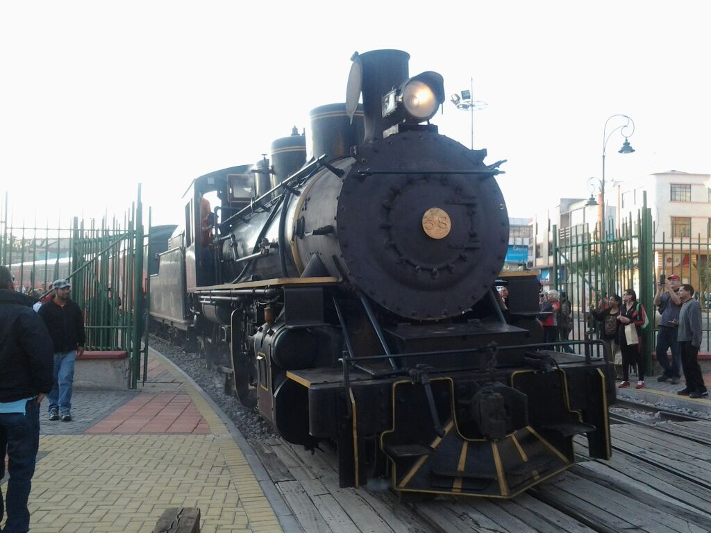
Day 4 RIOBAMBA / INGAPIRCA / CUENCA TRAIN if available
The ride on the small train of the Andes through the Devil’s Nose is a must since it has became one of the famous railways of the world. In the afternoon visit of the Ingapirca Archaeological complex. This is a place where you can see how native cultures blend with the Incas and then how all of them together survived the Spanish conquest.
Accommodations with breakfast El Dorado / Mansión Alcazar or Santa Lucía
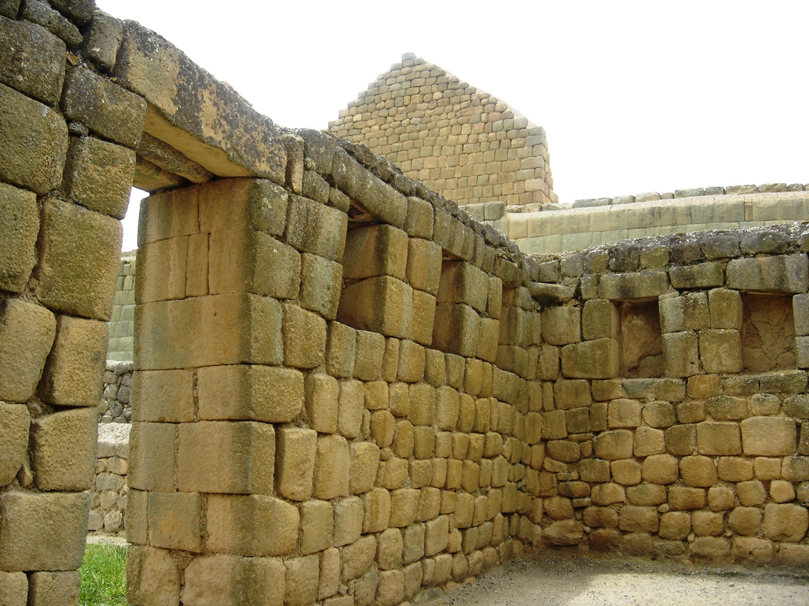
Day 5 CUENCA + GUALACEO & CHORDELEG
Cuenca is the newest UNESCO heritage site. The handsome sunlit domes of the cathedral, the quiet convents and museums, the city's romantic Tomebamba river flanked by overhanging houses are part of an experience that no one should miss. We offer an Afternoon visit of the Traditional villages of Gualaceo & Chordeleg to see jewelry Panama Huts and other crafts.
Accommodations with breakfast El Dorado / Mansión Alcazar or Santa Lucía
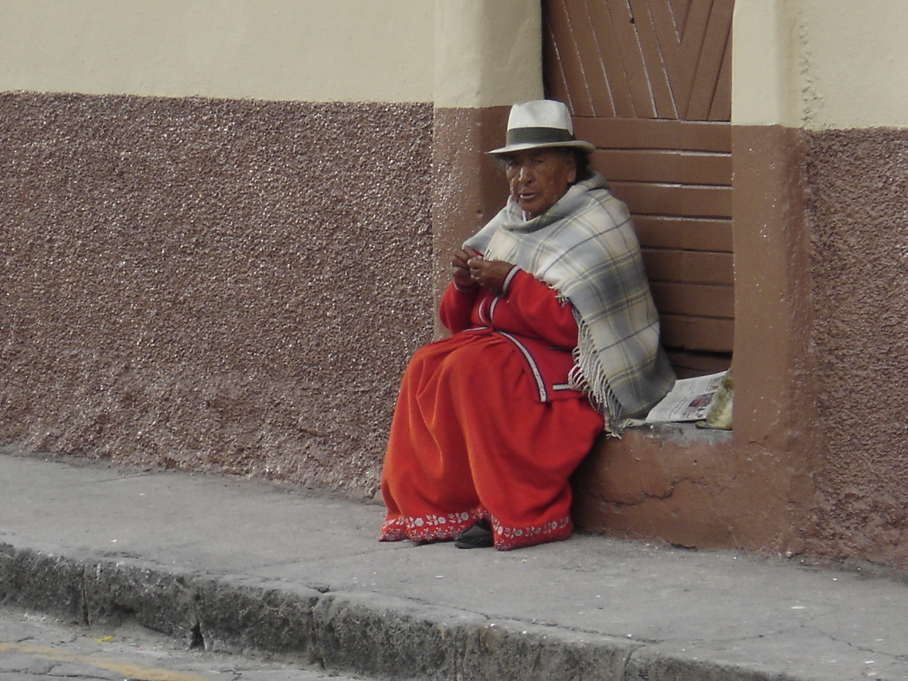
Day 6 CUENCA / GUAYAQUIL / THROUGH CAJAS NATIONAL PARK
Crossing the Andes is always an experience, more if it is through a National Park like the Cajas to us going down into the coast is the challenge and to see the costal plains as we approach them. Plantations of Cacao, Bananas and sugar cane remind us of the Banana Republic stories; these stories will be brought back to you at the newly opened Historical Garden of Guayaquil. Visit the new promenade and Santa Ana hill
Accommodations with breakfast Grand Hotel Guayaquil / Oro Verde Guayaquil
Day 7 TRANSFER OUT
Hotel : Mercure / Accor - 4 star
Gross rates per person
| 11 Pax | 5-10 Pax | 3-4 Pax | 2 Pax | |
|---|---|---|---|---|
| USD | 695 | 894 | 1089 | 1299 |
| Single Supp. | 220 | |||
Hotel : Hilton / Sheraton - 5 star
Gross rates per person
| 11 Pax | 5-10 Pax | 3-4 Pax | 2 Pax | |
|---|---|---|---|---|
| USD | on request | on request | on request | on request |
| Single Supp. | on request | |||
Hotel : Swissôtel / Raffles international - Deluxe
Gross rates per person
| 11 Pax | 5-10 Pax | 3-4 Pax | 2 Pax | |
|---|---|---|---|---|
| USD | 885 | 1099 | 1309 | 1539 |
| Single Supp. | 390 | |||
Book Now!
Planet Ecuador "Diversiland"
Welcome to the land of Diversity
Quito, the Equatorial line, Cotopaxi National Park, Baños and the Sangay National park, Chimborazo National park with its Indian communities and the Otavalo of our forefathers. From US$ 719
Day 1 (Sunday – Tuesday - Thursday) QUITO TRANSFER IN
Airport Assistance and transfer to the hotel
Accommodations with breakfast
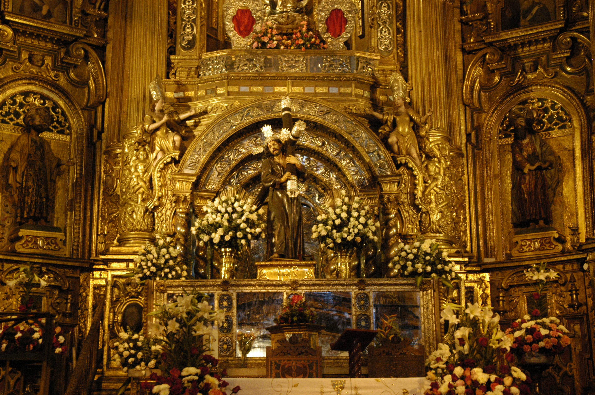
Day 2 QUITO CITY TOUR + EQUATORIAL LINE MONUMENT w/Snack (7 hours)
Monumental city tour of this main UNESCO cultural heritage site including the Presidential palace, Independence Square, the Metropolitan Cathedral (1550), the masterpiece of the baroque La Compañía (1605) and San Francisco (1535) church and cloister museum.
We offer a guided visit of the ethno graphic museum at the equator and some free time to enjoy the landmark.
Accommodations with breakfast
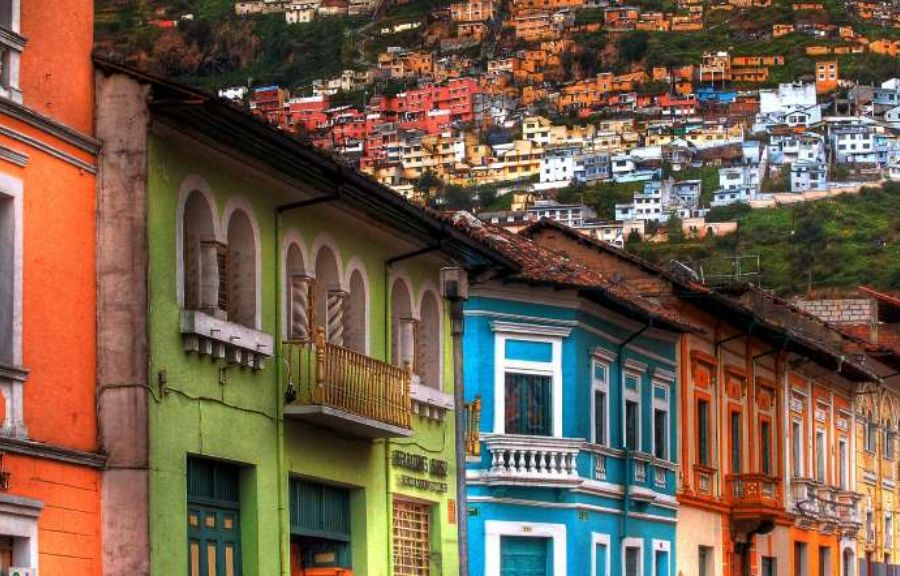
Day 3 QUITO / COTOPAXI NATIONAL PARK WITH NATURALIST / BAÑOS
After an early departure we get into the Cotopaxi National Park, This is the habitat of the Andean Condor and the Ecuadorian Hillstar hummingbirds. Various treks at different altitudes will give the opportunity to see unusual flora and fauna of the upper Andes and a final effort will take you up to the Snowline and Glacial at 4800 m.
Accommodations with breakfast and dinner
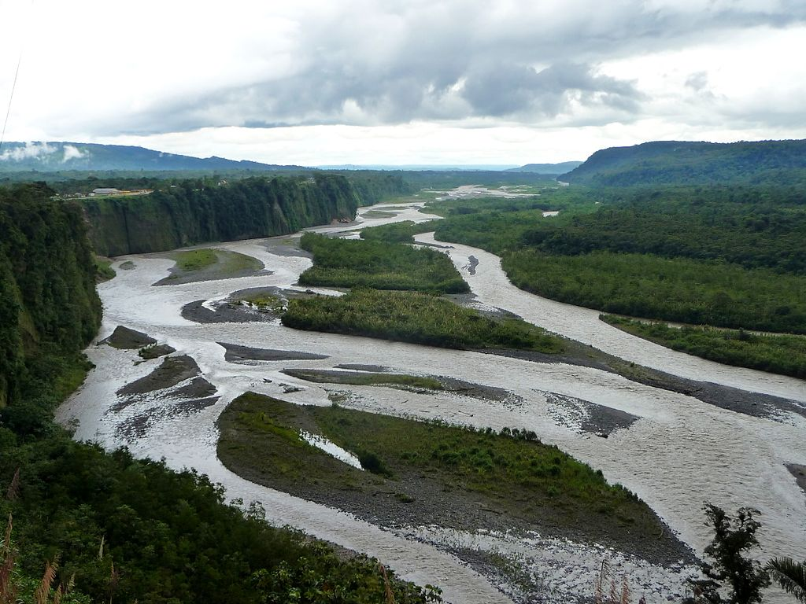
Day 4 THE AMAZON RAIN FOREST, SANGAY & CHIMBORAZO NATIONAL PARKS
The break point between the Andes and the Amazon is the ideal environment for Orchids and bromeliads. You can feel the volcanic creation all covered by waterfalls like the veil of for the bride. A breathtaking panorama from high up at Tungurahua, hikes in Rio Verde Falls and the Amazon are included. Afterwards we drive up to Chimborazo the biggest mountain on earth where we will be guests at a real pre-Columbian Indian community!
Accommodations with CB and dinner.
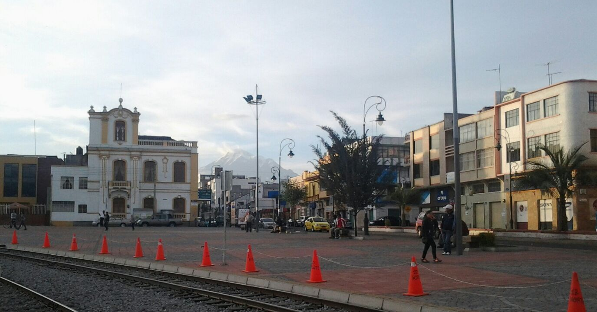
Day 5 CHIMBORAZO / QUITO
I think that Chimborazo and its Indian communities are the hidden treasure of the Andes. Imagine how far you can see from the biggest mountain in the world and closest point to the sun. If this is not enough we have the Purahá Indian nation sharing with us their secrets, customs and gods.
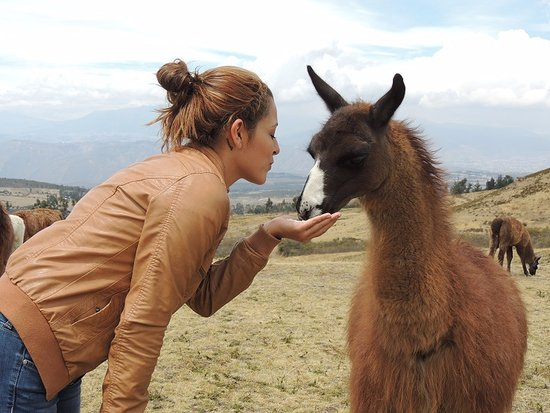
Day 6 QUITO / COCHASQUÍ / SAN ANTONIO / REAL SHAMAN VISIT
In Cochasquí there are 15 mounds in the form of pyramid built of volcanic ash blocks. The pyramids are of different sizes and some possess an access ramp, furthermore exists an ethnographic Museum to investigate the cultural roots using the aboriginal wisdom and the nature of the sector. San Antonio is the woodcarving center where the heritage of the Quito school of arts is kept. Upon request, at night we can visit a real SHAMAN to recharge our energy with a spiritual experience or have dinner with an Indian Family.
Accommodations at typical hacienda with lunch
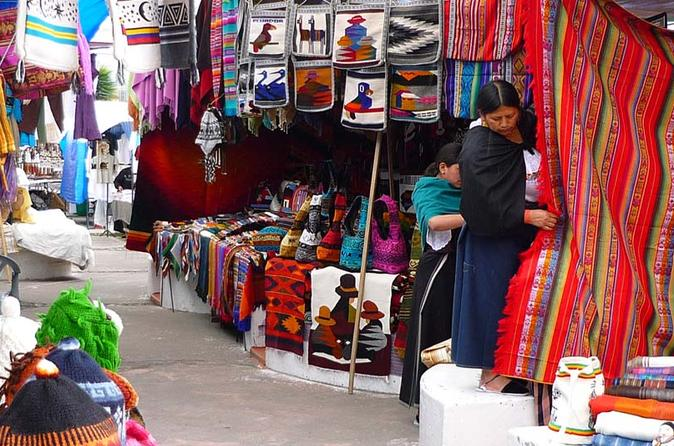
Day 7 OTAVALO INDIAN MARKET / COTACACHI / CAYAMBE / QUINCHE / QUITO
Otavalo is the biggest hand craft market in the Andes, but this is not just shopping is a gift for your eyes is an opportunity to interact with the Otavalo people, they are friendly and warm. After a gourmet lunch in Cotacachi, we will head back to Quito through Cayambe, the equatorial line and the Pilgrimage town of el Quinche where you will visit the most miraculous Madonna in South America
Day 8 TRANSFER OUT
Hotel : Mercure / Accor - 4 star
Gross rates per person
| 11 Pax | 5-10 Pax | 3-4 Pax | 2 Pax | |
|---|---|---|---|---|
| USD | 779 | 987 | 1216 | 1399 |
| Single Supp. | 245 | |||
Hotel : Hilton / Sheraton - 5 star
Gross rates per person
| 11 Pax | 5-10 Pax | 3-4 Pax | 2 Pax | |
|---|---|---|---|---|
| USD | on request | on request | on request | on request |
| Single Supp. | on request | |||
Hotel : Swissôtel / Raffles international - Deluxe
Gross rates per person
| 11 Pax | 5-10 Pax | 3-4 Pax | 2 Pax | |
|---|---|---|---|---|
| USD | 997 | 1199 | 1429 | 1619 |
| Single Supp. | 461 | |||
Book Now!
QUILOTOA / COTOPAXI
2 nights
All travel guides highly recommend this tour, as it at the most scenic area of Ecuador.
Quilotoa lake, Zumbahua, Tigua, Chugchilán, Pujilí, Saquisilí, Illiniza and Cotopaxi National Parks.

Day 1 Quito – Quilotoa – Chugchilán (Tuesday)
Stay at an exclusive real Ecological Country Inn
Day 2 Quilotoa – Parque Nacional Cotopaxi
Stay at a Historical Monument at the foot of Cotopaxi
Day 3 Saquisilí – Quito
Discoverer Style
Gross rates per person
| 10 Pax | 6-9 Pax | 3-5 Pax | 2 Pax | |
|---|---|---|---|---|
| USD | 394 | 425 | 494 | 544 |
| Single Supp. | 255 | |||
Book Now!
Three Andes National Parks
Cotopaxi, Chimborazo & Sangay National Parks
Our Main Course in 3 nights
The most different travel off the beaten track to get close to the Biggest Volcanoes on Earth, to meet silence and peace and then flow into the Amazon Basin. This is the homeland of alpacas, vicuñas, and wolves also home of the Purahá Indian Nation. Our exclusive treks open to our clients a new experience while we support local communities; our guides are specially trained by the Secretary of Environment to offer outstanding lectures and a deeper meaning to your visit. Program includes one night in Baños, one night at Hacienda Chuquipogyo and one optional night at an Indian community in the base of Chimborazo with all meal at the community.
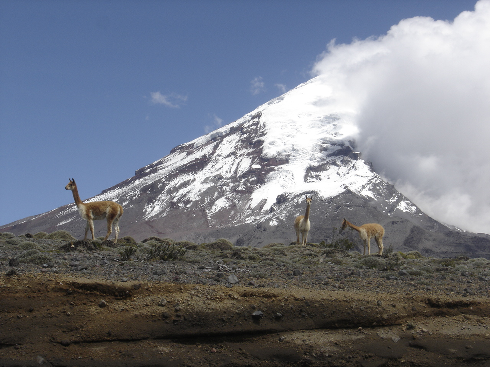
After an early departure we get into the Cotopaxi National Park, This is the habitat of the Andean Condor and the Ecuadorian Hillstar hummingbirds. Various treks at different altitudes will give the opportunity to see unusual flora and fauna of the upper Andes and a final effort will take you up to the Snowline and Glacial at 4800 m.
Following the course of the mighty Pastaza River into the Amazon Basin we offer a hike down into the Devil’s waterfall. This is a land of orchids and waterfalls as vegetation blast. There is private reserve that gives us a feeling of the Jungle and it’s different people.
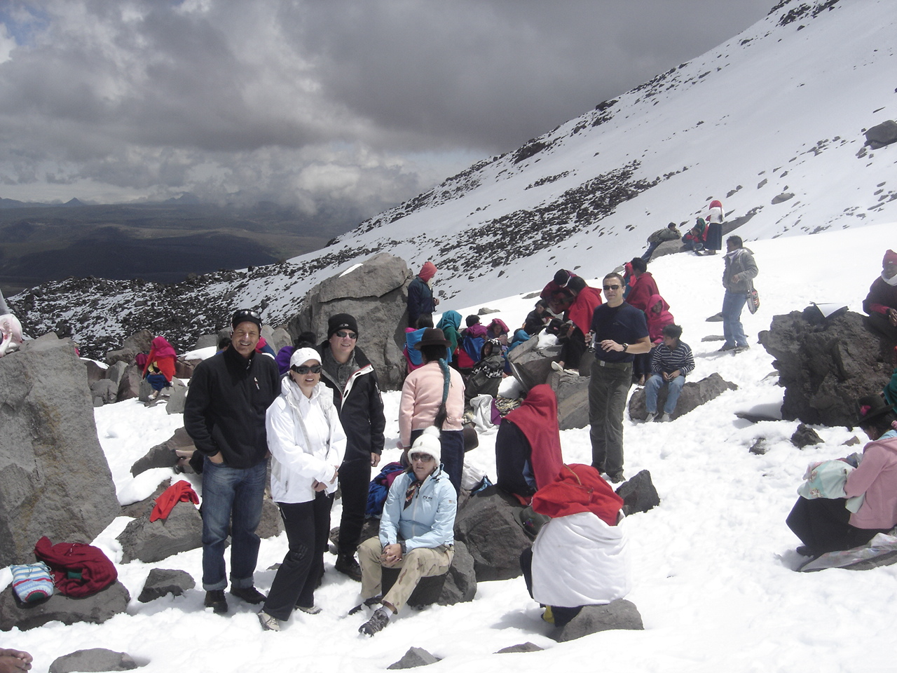
The main course of the journey is the two-day stay at the Indian Communities in the Chimborazo domains. Two major treks in the flanks of the Volcano will cover all travel expectations. A first 4-hour altitude trek will take you to the Black Stone where you'll feel on the top of the world and then on to the “Lonely Tree” or Machai Temple, the closest tree to the sun on earth. At night you' wi'll be hosted by a real Indian Community either at the community center or at their straw and adobe huts. On the second day we have a half-day trek to the “Ice Peckers”. People that dig 2 million years old Glacial pieces and then sell it in the market with fruit juice, they feel they're drinking a small portion of the soul of the mountain.
Explorer Style accomodations
Gross rates per person
| 6-9 Pax | 3-5 Pax | 2 Pax | ||
|---|---|---|---|---|
| USD | 442 | 682 | 837 | |
| Single Supp. | n/a | |||
Following the Steps of Humbolt and Inca Road
Auf Deutsch: Auf den Spuren Humboldts
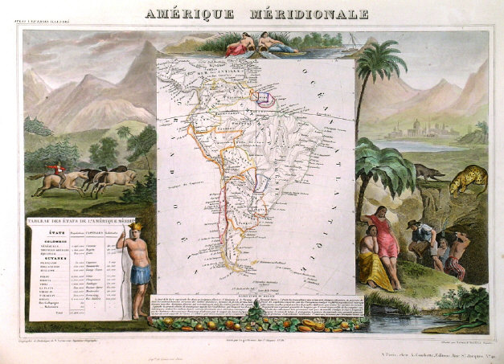
According to the Enciclopedia Humboldt came all the way from Bogotá watching carefully the Andes, in 1802. Onc3e in Quito, Capital of the Royalty of Quito, we was hosted by the family of Juan Pio Montufar, Marquis of Selva Alegre, togueter with his son Carlos Montufar, Humboldt made a few climbs to the Ecuadrian Andes. Among the picks we must menction Chimborazo, the highest snow pick in Ecuador, He also climbed Cayambe Volcano, Actually humbodlt covered almost all the entire Andes of now Ecuador. He travelled making measurements and collecting plants. German was very interested in the study of the Inca Ruins and infrastructure in Ecuador of those days…He Also climbed Pichincha ruling volcano in Quito, he climbed toghueter with young Montufar. His home base was the palace of the Marquis, he was welcome with local nobility and in Cotopaxi province he stayed at La Cienega home of the Marquis of Maenza. From where he studied the Volcano And the City of Latacunga.
Travel Program
Day 1 Transfer
Personal airport pick up from Quito Aiport and Transfer to selected hotel in private car.
Day 02 The Churches of Quito / Teleferico
We will visit the same churches that humboldt saw, Quito as heritage city was able to poreserve the original decoratins and richness of the Golden Ages of the Barroque
Day 03 Quito – Cayambe – Otavalo
Passing through the Equatorial line we will visit the village of Cayambe, palate biscuts and feel some of the rural Environment Humboldt saw, we continue until Otavalo for meeting the Otavaleños that live at the foot of their Gods.
Day 04 Otavalo – Quilotoa
This day we re going to cross the Avenue of the Volcanoes from East to West to capture the Most beautiful landscapes in South America. The Canyon of the Toachi River and Quilotoa are world known as the most scenic loop in the Andes.
Day 05 Quilotoa – la Cienega
At la Cienega we will get into the home enviroment that Humbodt had during his stay in Ecuador. The house remains untouched and is a charming hostel nowdays, if you BOOK on time you can get his same room !!!
Day 06 Cotopaxi National Park – Latacunga – Riobamba
In this second half of the Avenue of the Volcanoes and if weather permits, we can see the most interesting volcanoes of the Andes, one time all active.
- Vulkan Altar (ca. 5.758 m) the Most Beautiful volcano on earth
- Carlhuairazo (ca. 5.200 m)
- Vulcan Tunguarhua (ca. 5.200 m) the Active volcano at the moment
- Vulkan Chimborazo (ca. 6.310 m) the highest point on earth
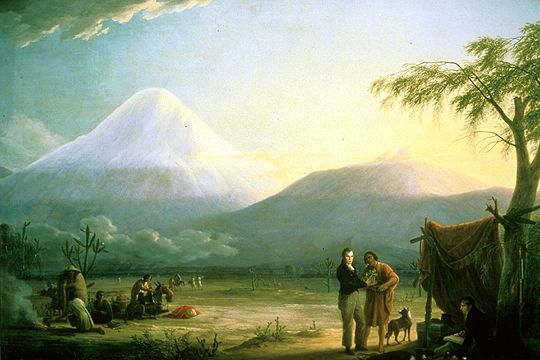
Day 07 Chimborazo National Park and Riobamba city tour
We aim on climbing at least up to 5000 mts. (16400 feet) and visit the new shelters. We will learn here about the plants of the Paramo and the Animals of the Paramo. This is a life zone that hold no agriculture and is about 3000 feet under snow level.
We can have an optional „lunch at the house of Simon Bolivar“
Day 08 Colta, Zicalpa, Alausí, Ingapirca
Our exclusive visit to this unusual place where the firt spanish foundatikon of the city of Quito took place inh August 1534. Here was the house of Pedro Vicente Maldonado and probably the area where he visited. City of Riobamba was destroyed by an earhquake in 1797.
We will have the opportunity to see the „mountain of the Diluve“ an old archeological site buit to preserve knowledge during the Diluve.
Finally we will have a complete visito the Archeological complex of Ingapirca and specifically looking for the Intihuaico that marvelled humbodlt.
Day 09 Ingapirca / Cuenca city Tour
Cuenca is the Largest city in the south of Ecuador, it is also a heritage site, we will walk it´s streets see the plazas and churches that made it our second Uneco heritage site.
Day 10 Cuenca / Guayaquil
Today we drive to see how the Andes uplifted from the Pacific, passing on our way through Manglares Churute Ecological Reserve. We might have the opportunity to vist a Cacao plantation and lean how to make artisan chocolate
Day 11 Transfer out (maybe) Galapagos Darwin?
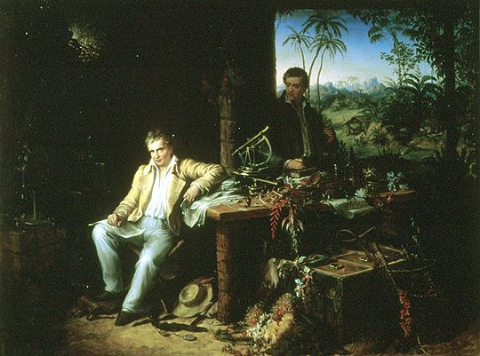
There are three options : Tourist Class, First Class, or 5 Stars
Rates from USD 2258
| Tourist Class Passengers |
2 3110 |
2* 3427 |
3-5 2887 |
6-9 2258 |
| First Class Passengers |
2 3316 |
2* 3683 |
3-5 3101 |
6-9 2542 |
| 5 Stars Passengers |
2 3790 |
2* 4172 |
3-5 3589 |
6-9 2592 |
* it is possible to have a diver guide for two psengers, normally we offer driver and guide.
All entrance tickets to visitor sites and half pension, breakfast and dinner. For lunch we will conveniently stop on a place we trust. We don't mind if you just have a coffee.
Auf Deutsch: Auf den Spuren Humboldts
Book Now!
All programs Includes:
- Better lecturers with certified National Guides / naturalist guides for Cotopaxi, Chimborazo and Sangay National Parks
- Better visitor sites
- Superior accommodations at the hotel of your choice
- All listed meals table d´hotel “A la Carte only at Relais & Chateaux”
- National Park Taxes
- Deluxe air – conditioned private transportation
- Gratuities to Airport porters
- Entrance fees to all sites of interest